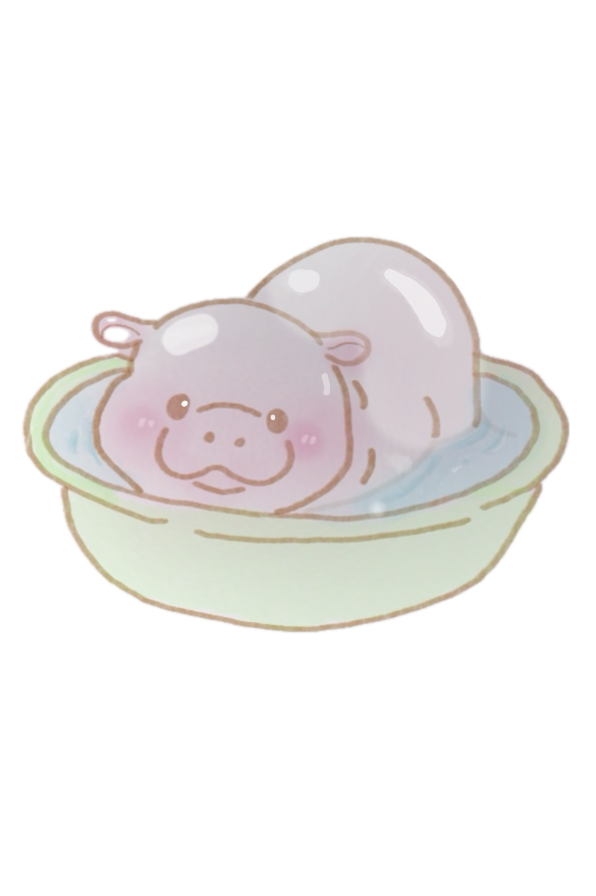

ABOUT ME
Moo Deng is a pygmy hippopotamus living in Khao Kheow Open Zoo in Si Racha, Chonburi, Thailand. She became a popular Internet sensation at two months of age after images of her went viral online in September 2024.
Moo Deng is a pygmy hippopotamus living in Khao Kheow Open Zoo in Si Racha, Chonburi, Thailand. She became a popular Internet sensation at two months of age after images of her went viral online in September 2024.
Moo Deng spends most of her time sleeping. Hippos can sleep for up to 16 hours a day. Just like human babies, they need lots of rest to grow up big and strong. For the first month or so, Moo Deng was feeding off her mother’s milk. But as of now, she is 3 months old and has started her journey with solid foods, like grass. Soon, Moo Deng will transition to a fully vegetarian diet, consisting of grass, leaves, and fruits.
Moo Deng must be kept hydrated because her skin cracks easily when dry. Thus, she always gets hosed down by the zoo keeps every day.
Moo Deng must be kept hydrated because her skin cracks easily when dry. Thus, she always gets hosed down by the zoo keeps every day.
At this time, Moo Deng indulges herself with skincare by taking a mud bath.
After enjoying her time in the bath, Moo Deng leaves to ease herself in a nap.
Moo Deng wakes up for her second meal of the day. Before playing with the zoo keepers.
Moo Deng’s exercise of the day leaves her feeling hungry, so she eats her third meal of the day before falling into slumber for the rest of the night.